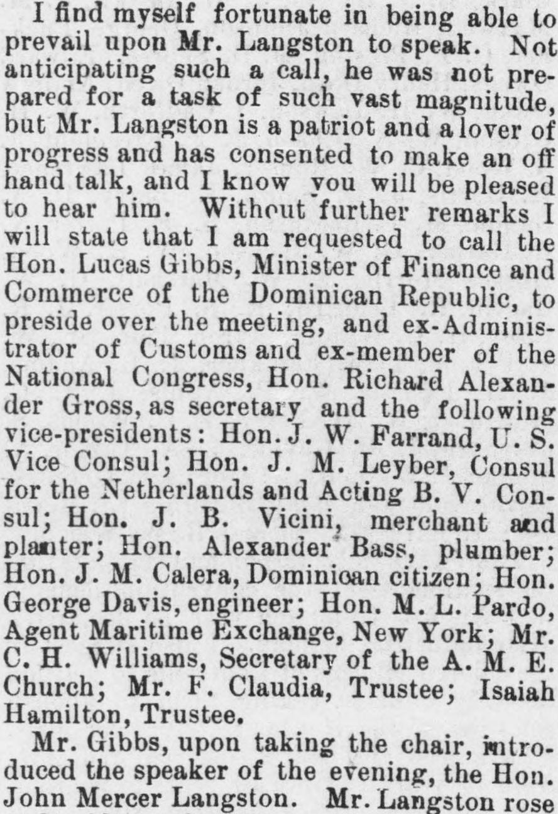
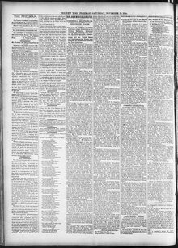

Lucas Gibbs, Minister of Finance and Commerce of the Dominican RepublicLucas Gibbs, Ministro de Hacienda y Comercio de la República Dominicana
The New York Freeman. New York [N.Y.], November 28, 1885. Page 2. Published by T. Thomas Fortune. A weekly newspaper, 1884–1887.The New York Freeman. New York [N.Y.], 28 de noviembre de 1885. Página 2. Publicado por T. Thomas Fortune. Periódico semanal, 1884–1887. View the originalVer el original


See the full pageVer la página completaThe New York Freeman reported on a meeting in the Dominican Republic presided over by Hon. Lucas Gibbs, Minister of Finance and Commerce, with Hon. Richard Alexander Gross serving as secretary, alongside several appointed vice-presidents and officials. Following his opening remarks, Mr. Gibbs introduced the evening's speaker, Hon. John Mercer Langston, an American citizen who expressed surprise before briefly addressing commercial relations and a reciprocal treaty.The New York Freeman reseñó una asamblea celebrada en la República Dominicana presidida por el honorable Lucas Gibbs, ministro de Hacienda y Comercio, actuando como secretario el honorable Richard Alexander Gross, junto a varios vicepresidentes y dignatarios designados. Tras sus palabras inaugurales, el Sr. Gibbs presentó al orador de la velada, el honorable John Mercer Langston, ciudadano estadounidense que manifestó su sorpresa antes de disertar brevemente sobre los nexos mercantiles y un convenio recíproco.
FULL TEXT:TEXTO COMPLETO:
The New York Freeman November 28, 188528 de noviembre de 1885
I find myself fortunate in being able to prevail upon Mr. Langston to speak. Not anticipating such a call, he was not prepared for a task of such vast magnitude, but Mr. Langston is a patriot and a lover of progress and has consented to make an off hand talk, and I know you will be pleased to hear him. Without further remarks I will state that I am requested to call the Hon. Lucas Gibbs, Minister of Finance and Commerce of the Dominican Republic, to preside over the meeting, and ex-Administrator of Customs and ex-member of the National Congress, Hon. Richard Alexander Gross, as secretary and the following vice-presidents: Hon. J. W. Farrand, U. S. Vice Consul; Hon. J. M. Leyber, Consul for the Netherlands and Acting B. V. Consul; Hon. J. B. Vicini, merchant and planter; Hon. Alexander Bass, plumber; Hon. J. M. Calera, Dominican citizen; Hon. George Davis, engineer; Hon. M. L. Pardo, Agent Maritime Exchange, New York; Mr. C. H. Williams, Secretary of the A. M. E. Church; Mr. F. Claudia, Trustee; Isaiah Hamilton, Trustee.Me considero afortunado de poder persuadir al Sr. Langston a hablar. No anticipando tal llamada, no estaba preparado para una tarea de tan vasta magnitud, pero el Sr. Langston es un patriota y un amante del progreso y ha consentido en hacer una charla improvisada, y sé que ustedes estarán complacidos de escucharlo. Sin más comentarios declararé que se me ha pedido llamar al Honorable Lucas Gibbs, Ministro de Finanzas y Comercio de la República Dominicana, para presidir la reunión, y al ex Administrador de Aduanas y ex miembro del Congreso Nacional, Honorable Richard Alexander Gross, como secretario y a los siguientes vicepresidentes: Honorable J. W. Farrand, Vicecónsul de los Estados Unidos; Honorable J. M. Leyber, Cónsul de los Países Bajos y Cónsul B. V. en funciones; Honorable J. B. Vicini, comerciante y hacendado; Honorable Alexander Bass, plomero; Honorable J. M. Calera, ciudadano dominicano; Honorable George Davis, ingeniero; Honorable M. L. Pardo, Agente de la Bolsa Marítima, Nueva York; Sr. C. H. Williams, Secretario de la Iglesia A. M. E.; Sr. F. Claudia, Fideicomisario; Isaiah Hamilton, Fideicomisario.
Mr. Gibbs, upon taking the chair, introduced the speaker of the evening, the Hon. John Mercer Langston.El Sr. Gibbs, al tomar la presidencia, presentó al orador de la noche, el Honorable John Mercer Langston.